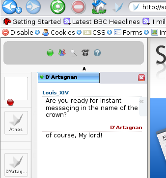
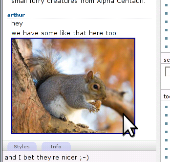
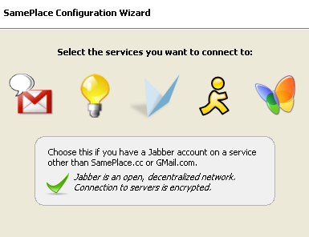

SamePlace was a research project started in 2005. It explored a novel way of designing real-time, multi-user applications by mixing the best bits of the web and instant messaging technologies.
It resulted in an extension for the Firefox browser (which became popular on its own as instant messaging client), a research paper and talk for XTech 2007, and a grand prize in the Extend Firefox 2 contest.
Its features:
communication among users on a web page ("place") without the web page owner needing to provide infrastructure (or even permission) for it;
an extended concept of "instant messaging application", generalizing chat and including collaborative drawing, games, remote presentations, co-browsing, and so on;
a web-inspired delivery method, where the application developer (provider of functionality) works independently from the client developer (provider of access) and only distributes a URL, contrary to the fat-client plug-in approach of collaborative applications where the application developer distributes code.
Implementation-wise, it relied on XMPP as an application-unspecific, "stupid" transport mechanism (think of it as a higher-level TCP/IP), with application-specific functionality defined at end points (the app being loaded by clients as a web page, or an automated agent taking part in the conversation) and carried by namespaced payloads within the three XMPP messaging primitives (<message/>, <iq/>, <presence/>).
Current status
The project is no longer being developed. Ideas and a fair share of implementation choices may be useful for people researching the same space. Code does not run in current versions of Firefox and of the Mozilla platform, mainly due to support for E4X having being dropped.
Related work
A few years later Google worked on similar concepts in the form of a real-time gadget API for Talk, but then discontinued the effort. TogetherJS partly plays in the same space.
End-user info (historical interest only)
Installation
SamePlace and its accompanying library xmpp4moz are available from the Firefox add-ons site.
Features & Screenshots
- Follow chats easily in the sidebar while browsing the web. No need to go back and forth between your navigation and a chat web site.

- Drag and drop pictures from web sites right into your chats.

- Chat with GMail contacts, contacts on other Jabber-based networks, and contacs on legacy networks such as MSN or AIM through special transports.

Developers
See GitHub for source code and developer documentation.
Contact
You can reach the author at hyperstruct, at, gmail, dot, com.
SamePlace is Open Source Software released under the GPLv3 license with additions as per Section 7b. Copyright ©2006-2010 by Massimiliano Mirra.